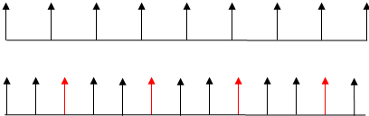
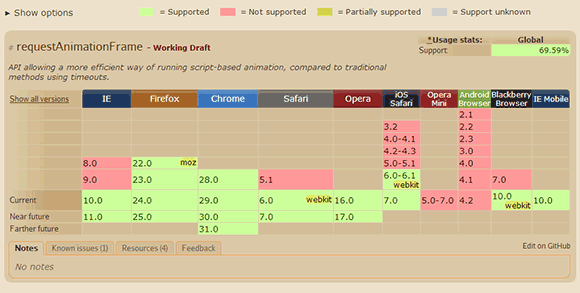

by zhangxinxu from http://www.zhangxinxu.com
本文地址：http://www.zhangxinxu.com/wordpress/?p=3695
一、哟，requestAnimationFrame, 新同学，先自我介绍下
Hello, 大家好，我就是风姿卓越，万种迷人的requestAnimationFrame，呵呵呵呵。很高兴和大家见面，请多指教！
。。。。
咳咳，大家不要一副不屑的样子嘛。跟你讲，我可是很有用的。所谓人如其名，看我名字这么长，表意为“请求动画帧”，明摆着一副很屌的样子！
。。。。按照这种说法，“樱桃小丸子”就是樱桃做的丸子咯，恩，看脑袋确实蛮像的~
。。。。
想到明天就是国庆大假，今天我就小人不记大人过。给你们来副震精的图：

相当一部分的浏览器的显示频率是16.7ms, 就是上图第一行的节奏，表现就是“我和你一步两步三步四步往前走……”。如果我们火力搞猛一点，例如搞个10ms setTimeout，就会是下面一行的模样——每第三个图形都无法绘制（红色箭头指示），表现就是“我和你一步两步 坑 四步往前走……”。
囊爹(なんでよ)？
国庆北京高速，最多每16.7s通过一辆车，结果，突然插入一批setTimeout的军车，强行要10s通过。显然，这是超负荷的，要想顺利进行，只能让第三辆车直接消失（正如显示绘制第三帧的丢失）。然，这是不现实的，于是就有了会堵车！
同样的，显示器16.7ms刷新间隔之前发生了其他绘制请求(setTimeout)，导致所有第三帧丢失，继而导致动画断续显示（堵车的感觉），这就是过度绘制带来的问题。不仅如此，这种计时器频率的降低也会对电池使用寿命造成负面影响，并会降低其他应用的性能。
这也是为何setTimeout的定时器值推荐最小使用16.7ms的原因（16.7 = 1000 / 60, 即每秒60帧）。
而我requestAnimationFrame就是为了这个而出现的。我所做的事情很简单，跟着浏览器的绘制走，如果浏览设备绘制间隔是16.7ms，那我就这个间隔绘制；如果浏览设备绘制间隔是10ms, 我就10ms绘制。这样就不会存在过度绘制的问题，动画不会掉帧，自然流畅的说~~
内部是这么运作的：
浏览器（如页面）每次要洗澡（重绘），就会通知我(requestAnimationFrame)：小丸子，我要洗澡了，你可以跟我一起洗哦！
这是资源非常高效的一种利用方式。怎么讲呢？
- 就算很多个小丸子要一起洗澡，浏览器只要通知一次就可以了。而
setTimeout貌似是多个独立绘制。 - 页面最小化了，或者被Tab切换关灯了。页面是不会洗澡的，自然，小丸子也不会洗澡的（没通知啊）。页面绘制全部停止，资源高效利用。
肿么样？requestAnimationFrame桑麻我果然是万千迷人的吧！！
耶！果然有料，不是看上去的平板电脑。
唷~夸得人家都不好意思了！
。。。。那你的兼容性如何？
我的兼容性啊~~ 孬，见下面~

Android设备压根就不支持嘛！其他设备基本上跟CSS3动画的支持一模一样嘛。
我说小美女，据我所知，CSS3 transition或animation动画也是走的跟你一样的绘制原理（补充于2013-10-09：根据自己后来的测试，发现，CSS3动画在Tab切换回来的时候，动画表现并不暂停；通过Chrome frames工具测试发现，Tab切换之后，计算渲染绘制都停止，Tab切换回来时似乎通过内置JS计算了动画位置实现重绘，造成动画不暂停的感觉）。但是人家的实现轻松很多啊，而且相当强大，那你还有个毛线用！你该想想你一直鲜有人问津的原因了！
二、反击吧，requestAnimationFrame同学
基佬们，你们的眼界太狭隘了，观点太肤浅的。首先从哲学宏观讲，事物存在必有其道理。因此，本大人肯定是有价值的。
那你到说说你有纳尼价值~~~
准备好了木有，待会儿说出来吓死你们。听好了，足足有3大点：
1. 统一的向下兼容策略
虽说CSS3实现动画即高效又方便，但是对于PC浏览器，IE8, IE9之流，你想兼容实现某些动画效果，比方说淡入淡出，敢问，你怎么实现？
看你们那副呆若木鸡的表情就知道了，IE10+ CSS3实现，IE9-之流JS setTimeout实现，我说累不累啊，两套完全不同的style. 你改下动画时间是不是要改两处？但是我requestAnimationFrame跟setTimeout非常类似，都是单回调，用法也类似。
var handle = setTimeout(renderLoop, PERIOD);
var handle = requestAnimationFrame(renderLoop);
我requestAnimationFrame调用一次只会重绘一次动画，因此，如果想要实现联系动画，就使用renderLoop反复蹂躏我吧~
So，如果想要简单的兼容，可以这样子：
window.requestAnimFrame = (function(){
return window.requestAnimationFrame ||
window.webkitRequestAnimationFrame ||
window.mozRequestAnimationFrame ||
function( callback ){
window.setTimeout(callback, 1000 / 60);
};
})();
但是呢，并不是所有设备的绘制时间间隔是1000/60 ms, 以及上面并木有cancel相关方法，所以，就有下面这份更全面的兼容方法：
(function() {
var lastTime = 0;
var vendors = ['webkit', 'moz'];
for(var x = 0; x < vendors.length && !window.requestAnimationFrame; ++x) {
window.requestAnimationFrame = window[vendors[x] + 'RequestAnimationFrame'];
window.cancelAnimationFrame = window[vendors[x] + 'CancelAnimationFrame'] || // Webkit中此取消方法的名字变了
window[vendors[x] + 'CancelRequestAnimationFrame'];
}
if (!window.requestAnimationFrame) {
window.requestAnimationFrame = function(callback, element) {
var currTime = new Date().getTime();
var timeToCall = Math.max(0, 16.7 - (currTime - lastTime));
var id = window.setTimeout(function() {
callback(currTime + timeToCall);
}, timeToCall);
lastTime = currTime + timeToCall;
return id;
};
}
if (!window.cancelAnimationFrame) {
window.cancelAnimationFrame = function(id) {
clearTimeout(id);
};
}
}());
上JS可点击这里下载。
然后，我们就可以以使用setTimeout的调调使用requestAnimationFrame方法啦，IE6也能支持哦！
耶耶耶！……
多谢捧场！(*^__^*) 嘻嘻……
2. CSS3动画不能应用所有属性
使用CSS3动画可以改变高宽，方位，角度，透明度等等。但是，就像六道带土也有弱点一样，CSS3动画也有属性鞭长莫及。比方说scrollTop值。如果我们希望返回顶部是个平滑滚动效果，就目前而言，CSS3似乎是无能为力的。此时，还是要JS出马，势必，我requestAnimationFrame大人就可以大放异彩，万众瞩目啦，哈哈哈哈哈哈哈~~
比方说点下面这个按钮，滚上去再滚下来，哈哈~
哟哟哟，不错不错，刮目相看啊，丸子~~
人家不禁夸的啦~~
3. CSS3支持的动画效果有限
由于CSS3动画的贝塞尔曲线是一个标准3次方曲线（详见：贝塞尔曲线与CSS3动画、SVG和canvas的基情），因此，只能是：Linear, Sine, Quad, Cubic, Expo等，但对于Back, Bounce等缓动则只可观望而不可亵玩焉。
下面这张图瞅瞅，那些波澜壮阔的曲线都是CSS3木有的~~

咋办，咋办？只能是JS实现啦，于是，本大人我requestAnimationFrame可以再一次大放异彩啦，啊哈哈哈！
得意的太早了吧，这些动画曲线看上去很复杂，偶们显然驾驭不了了。
就知道你们这些基佬中看不中用。先给大家普及下缓动(Tween)知识吧：
- Linear：无缓动效果
- Quadratic：二次方的缓动（t^2）
- Cubic：三次方的缓动（t^3）
- Quartic：四次方的缓动（t^4）
- Quintic：五次方的缓动（t^5）
- Sinusoidal：正弦曲线的缓动（sin(t)）
- Exponential：指数曲线的缓动（2^t）
- Circular：圆形曲线的缓动（sqrt(1-t^2)）
- Elastic：指数衰减的正弦曲线缓动
- 超过范围的三次方缓动（(s+1)*t^3 – s*t^2）
- 指数衰减的反弹缓动
每个效果都分三个缓动方式，分别是（可采用后面的邪恶记忆法帮助记忆）：
- easeIn：从0开始加速的缓动，想象OOXX进去，探路要花时间，因此肯定是先慢后快的；
- easeOut：减速到0的缓动，想象OOXX出来，肯定定先快后慢的，以防掉出来；
- easeInOut：前半段从0开始加速，后半段减速到0的缓动，想象OOXX进进出出，先慢后快然后再慢。
每周动画效果都有其自身的算法。我们都知道jQuery UI中就有缓动，As脚本也内置了缓动，其中的运动算法都是一致的。我特意弄了一份，哦呵呵呵~~（因为较高，滚动显示），或GitHub访问：
/*
* Tween.js
* t: current time（当前时间）
* b: beginning value（初始值）
* c: change in value（变化量）
* d: duration（持续时间）
*/
var Tween = {
Linear: function(t, b, c, d) { return c*t/d + b; },
Quad: {
easeIn: function(t, b, c, d) {
return c * (t /= d) * t + b;
},
easeOut: function(t, b, c, d) {
return -c *(t /= d)*(t-2) + b;
},
easeInOut: function(t, b, c, d) {
if ((t /= d / 2) < 1) return c / 2 * t * t + b;
return -c / 2 * ((--t) * (t-2) - 1) + b;
}
},
Cubic: {
easeIn: function(t, b, c, d) {
return c * (t /= d) * t * t + b;
},
easeOut: function(t, b, c, d) {
return c * ((t = t/d - 1) * t * t + 1) + b;
},
easeInOut: function(t, b, c, d) {
if ((t /= d / 2) < 1) return c / 2 * t * t*t + b;
return c / 2*((t -= 2) * t * t + 2) + b;
}
},
Quart: {
easeIn: function(t, b, c, d) {
return c * (t /= d) * t * t*t + b;
},
easeOut: function(t, b, c, d) {
return -c * ((t = t/d - 1) * t * t*t - 1) + b;
},
easeInOut: function(t, b, c, d) {
if ((t /= d / 2) < 1) return c / 2 * t * t * t * t + b;
return -c / 2 * ((t -= 2) * t * t*t - 2) + b;
}
},
Quint: {
easeIn: function(t, b, c, d) {
return c * (t /= d) * t * t * t * t + b;
},
easeOut: function(t, b, c, d) {
return c * ((t = t/d - 1) * t * t * t * t + 1) + b;
},
easeInOut: function(t, b, c, d) {
if ((t /= d / 2) < 1) return c / 2 * t * t * t * t * t + b;
return c / 2*((t -= 2) * t * t * t * t + 2) + b;
}
},
Sine: {
easeIn: function(t, b, c, d) {
return -c * Math.cos(t/d * (Math.PI/2)) + c + b;
},
easeOut: function(t, b, c, d) {
return c * Math.sin(t/d * (Math.PI/2)) + b;
},
easeInOut: function(t, b, c, d) {
return -c / 2 * (Math.cos(Math.PI * t/d) - 1) + b;
}
},
Expo: {
easeIn: function(t, b, c, d) {
return (t==0) ? b : c * Math.pow(2, 10 * (t/d - 1)) + b;
},
easeOut: function(t, b, c, d) {
return (t==d) ? b + c : c * (-Math.pow(2, -10 * t/d) + 1) + b;
},
easeInOut: function(t, b, c, d) {
if (t==0) return b;
if (t==d) return b+c;
if ((t /= d / 2) < 1) return c / 2 * Math.pow(2, 10 * (t - 1)) + b;
return c / 2 * (-Math.pow(2, -10 * --t) + 2) + b;
}
},
Circ: {
easeIn: function(t, b, c, d) {
return -c * (Math.sqrt(1 - (t /= d) * t) - 1) + b;
},
easeOut: function(t, b, c, d) {
return c * Math.sqrt(1 - (t = t/d - 1) * t) + b;
},
easeInOut: function(t, b, c, d) {
if ((t /= d / 2) < 1) return -c / 2 * (Math.sqrt(1 - t * t) - 1) + b;
return c / 2 * (Math.sqrt(1 - (t -= 2) * t) + 1) + b;
}
},
Elastic: {
easeIn: function(t, b, c, d, a, p) {
var s;
if (t==0) return b;
if ((t /= d) == 1) return b + c;
if (typeof p == "undefined") p = d * .3;
if (!a || a < Math.abs(c)) {
s = p / 4;
a = c;
} else {
s = p / (2 * Math.PI) * Math.asin(c / a);
}
return -(a * Math.pow(2, 10 * (t -= 1)) * Math.sin((t * d - s) * (2 * Math.PI) / p)) + b;
},
easeOut: function(t, b, c, d, a, p) {
var s;
if (t==0) return b;
if ((t /= d) == 1) return b + c;
if (typeof p == "undefined") p = d * .3;
if (!a || a < Math.abs(c)) {
a = c;
s = p / 4;
} else {
s = p/(2*Math.PI) * Math.asin(c/a);
}
return (a * Math.pow(2, -10 * t) * Math.sin((t * d - s) * (2 * Math.PI) / p) + c + b);
},
easeInOut: function(t, b, c, d, a, p) {
var s;
if (t==0) return b;
if ((t /= d / 2) == 2) return b+c;
if (typeof p == "undefined") p = d * (.3 * 1.5);
if (!a || a < Math.abs(c)) {
a = c;
s = p / 4;
} else {
s = p / (2 *Math.PI) * Math.asin(c / a);
}
if (t < 1) return -.5 * (a * Math.pow(2, 10* (t -=1 )) * Math.sin((t * d - s) * (2 * Math.PI) / p)) + b;
return a * Math.pow(2, -10 * (t -= 1)) * Math.sin((t * d - s) * (2 * Math.PI) / p ) * .5 + c + b;
}
},
Back: {
easeIn: function(t, b, c, d, s) {
if (typeof s == "undefined") s = 1.70158;
return c * (t /= d) * t * ((s + 1) * t - s) + b;
},
easeOut: function(t, b, c, d, s) {
if (typeof s == "undefined") s = 1.70158;
return c * ((t = t/d - 1) * t * ((s + 1) * t + s) + 1) + b;
},
easeInOut: function(t, b, c, d, s) {
if (typeof s == "undefined") s = 1.70158;
if ((t /= d / 2) < 1) return c / 2 * (t * t * (((s *= (1.525)) + 1) * t - s)) + b;
return c / 2*((t -= 2) * t * (((s *= (1.525)) + 1) * t + s) + 2) + b;
}
},
Bounce: {
easeIn: function(t, b, c, d) {
return c - Tween.Bounce.easeOut(d-t, 0, c, d) + b;
},
easeOut: function(t, b, c, d) {
if ((t /= d) < (1 / 2.75)) {
return c * (7.5625 * t * t) + b;
} else if (t < (2 / 2.75)) {
return c * (7.5625 * (t -= (1.5 / 2.75)) * t + .75) + b;
} else if (t < (2.5 / 2.75)) {
return c * (7.5625 * (t -= (2.25 / 2.75)) * t + .9375) + b;
} else {
return c * (7.5625 * (t -= (2.625 / 2.75)) * t + .984375) + b;
}
},
easeInOut: function(t, b, c, d) {
if (t < d / 2) {
return Tween.Bounce.easeIn(t * 2, 0, c, d) * .5 + b;
} else {
return Tween.Bounce.easeOut(t * 2 - d, 0, c, d) * .5 + c * .5 + b;
}
}
}
}
Math.tween = Tween;
于是，借助大人我requestAnimationFrame以及上面的动画算法，各种动画效果所向披靡了，哈哈哈哈！！
哇哦哇哦，大赞！可不可以给我们这些鼠辈开开眼界？
明天放假，老娘心情好，就给你们露一手，实现个铁球落下的效果。
您可以狠狠地点击这里：requestAnimationFrame+Tween缓动小球落地效果
截图如下：

相关源代码可以参见demo页面源代码——直接右键即可以。核心动画部分的脚本是：
funFall = function() {
var start = 0, during = 100;
var _run = function() {
start++;
var top = Tween.Bounce.easeOut(start, objBall.top, 500 - objBall.top, during);
ball.css("top", top);
shadowWithBall(top); // 投影跟随小球的动
if (start < during) requestAnimationFrame(_run);
};
_run();
};
我靠！太劲爆了！太带感了！丸子殿下，你太牛逼啦！！
嘻嘻，小意思啦，诸位！最后，预祝大家节日快乐！！
补充于2014-02-08
新年伊始，根据这篇翻译文章一些测试说法，FireFox/Chrome浏览器对setInterval, setTimeout做了优化，页面处于闲置状态的时候，如果定时间隔小于1秒钟(1000ms)，则停止了定时器。与requestAnimationFrame有类似行为。但如果时间间隔大于或等于1000ms，定时器依然执行，即使页面最小化或非激活状态。
参见下表：
| setInterval | requestAnimationFrame | |
|---|---|---|
| IE | 无影响 | 暂停 |
| Safari | 无影响 | 暂停 |
| Firefox | >=1s | 1s - 3s |
| Chrome | >=1s | 暂停 |
| Opera | 无影响 | 暂停 |
相关链接
- http://easings.net/zh-cn
- http://www.jiawin.com/requestanimationframe-animation-windmill/
- http://msdn.microsoft.com/zh-cn/library/ie/hh920765(v=vs.85).aspx
- http://www.paulirish.com/2011/requestanimationframe-for-smart-animating/
- http://caniuse.com/#search=requestAnimationFrame
- https://github.com/zhangxinxu/Tween/blob/master/tween.js
- http://www.cnblogs.com/cloudgamer/archive/2009/01/06/tween.html
- http://blog.segmentfault.com/humphry/1190000000386368
原创文章，转载请注明来自张鑫旭-鑫空间-鑫生活[http://www.zhangxinxu.com]
本文地址：http://www.zhangxinxu.com/wordpress/?p=3695
- 如何使用Tween.js各类原生动画运动缓动算法 (0.425)
- CSS3 radial-gradient径向渐变语法及辅助理解案例10则 (0.287)
- as3写的flash特效菜单（二十六） (0.192)
- canvas 2D炫酷动效的实现套路和需要的技术积累 (0.192)
- jQuery-火焰灯效果导航菜单 (0.138)
- 分享一个即插即用的私藏缓动动画JS小算法 (0.138)
- as3写的flash特效菜单（三十一） (0.115)
- jQuery之使用slideToggle实现垂直下拉菜单 (0.061)
- CSS3 animate实现图片墙3D翻转效果 (0.061)
- 回流与重绘：CSS性能让JavaScript变慢？ (0.057)
- 超级强大的SVG SMIL animation动画详解 (RANDOM - 0.023)
{kind=link}
我觉得setTimeout替代requestAnimationFrame的插件是不对的，因为如果页面有多个requestAnimationFrame时候，requestAnimationFrame里面的代码是统一执行的，不是单独执行的。而setTimeout是单独执行的，那这样就会有很大的性能问题，如果一个页面有100个动画，那兼容代码就得执行100次setTimeout，是不对的。为了保持性能一致，setTimeout的时候，触发自定义事件trigger(‘requestAnimationFrame’)，在各个动画里面绑定on.(‘requestAnimationFrame’) 事件，保持全局一个setTimeout 事件
Nice
新人 久闻张鑫旭
故留言到此一游
最好看过浏览器c++的代码再来装逼
说的是你自己吗
setTimeout为10ms，为什么我感觉应该丢失的是第二帧，第一帧10ms后进行绘制，此时浏览器刚开始进行渲染。然后过10ms，此时还没达到浏览器的显示频率是16.7ms，所以第二帧丢失，再过10ms，距离第一次绘制已经过去20ms了大于16.7ms，所以第三帧可以绘制，这样理解有问题吗
12
document.querySelector(‘button’).onclick = function(){
var oT = document.body.scrollTop,flag = ‘up';
var moveup = function(){
var ot = document.body.scrollTop;
if( flag == ‘up’ ){
ot -= 20;
if(ot = oT){
ot = oT;
flag = ‘stop';
}
}
console.log(ot)
document.body.scrollTop = ot;
var x = requestAnimationFrame(moveup);
if(flag == ‘stop’){
cancelAnimationFrame(x);
}
}
if(oT){
moveup();
}
}
大神页面中那个向上的按钮对应的js缺少一个取消的效果以及scrollTop的兼容最好，见笑了
关于easeIn，easeOut的解释。。。佩服佩服
色情男主播。。。
男神，接受我的膜拜~~~~
写得很棒，很喜欢你这种风格。